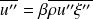
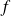
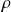
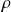

Combustion turbulente
Modélisation du transport turbulent dans les écoulements réactifs non prémélangés
Ce travail a été effectué Dans l'équipe d'Arnaud Mura avec l'aide de Vincent Robin.
Le concept de viscosité turbulente retenu dans les approches de type
 -
a permis de modéliser simplement le flux turbulent d'un scalaire par analogie avec la loi de diffusion moléculaire. Cette méthode a l'avantage d'être simple et très robuste car elle augmente le terme de diffusion du scalaire et contribue ainsi à la stabilité des méthodes de résolution numérique.
-
a permis de modéliser simplement le flux turbulent d'un scalaire par analogie avec la loi de diffusion moléculaire. Cette méthode a l'avantage d'être simple et très robuste car elle augmente le terme de diffusion du scalaire et contribue ainsi à la stabilité des méthodes de résolution numérique.
Néanmoins, les lois de type "gradient" utilisées pour représenter les transports turbulents ne sont valables que dans des cas académiques très simples tels que les écoulements de couches minces cisaillées.
Les écoulements réactifs sont sujets à de fortes variations de masse volumique qui affectent de manière significative les transports d'espèces chimiques et de quantité de mouvement. Ces phénomènes sont d'autant plus importants que les variations de masse volumique considérées ont lieu dans des zones très fines comparées aux structures turbulentes ; ce qui est souvent le cas dans les écoulements réactifs turbulents. Ainsi, les flux turbulents obtenus à partir des lois de type "gradient" peuvent être opposés aux flux mesurés expérimentalement.
Par exemple, les variations de masse volumique dans les écoulements réactifs parfaitement prémélangés, qui ont été très largement étudiés depuis plusieurs décennies, conduisent aux phénomènes bien connus de diffusion turbulente à contre-gradient et à la production de turbulence par la flamme. Dans ces écoulements, les variations de masse volumique affectent d'une part le champ de vitesse, via l'équation de continuité, et d'autre part le champ scalaire, via l'équation d'état. L'équation d'état permet toujours de relier la valeur de la masse volumique à la valeur du scalaire que ce soit dans un écoulement non réactif (scalaire : fraction de mélange ), un écoulement réactif parfaitement prémélangé (scalaire : variable d'avancement ) ou un écoulement réactif non prémélangé (scalaire : fraction de mélange ).
Ainsi, quel que soit l'écoulement considéré, les fluctuations de vitesse et des scalaires sont fortement corrélées aux fluctuations de masse volumique (qui elle même est modifiée par des réactions chimiques dans les écoulements réactifs). Ce sont ces relations que nous cherchons à établir.

Une grande partie des effets de production de turbulence par les variations de masse volumique peut être prise en compte via les termes de pression apparaissant dans l'équation de transport pour l'énergie cinétique turbulente et ou apparaissant dans l'équation de transport des scalaires.
Ainsi, nous cherchons dans un premier temps, à proposer une relation entre la moyenne des fluctuations et le flux turbulent à l'aide du volume spécifique qui permet de tracer l'évolution du mélange.
En fait, nous utiliserons le volume spécifique normaliser : avec
Écoulements non réactif à densité variable | Flammes de prémélanges | Flammes non prémélangées |
|
|
|
 |
|
|
|
|
|
|

En considérant que la chimie est infiniment rapide par rapport au mélange turbulent, nous pouvons calculer l'équilibre chimique et déterminer

,
 ,

ou les fraction massiques
uniquement en fonction de
.
,

ou les fraction massiques
uniquement en fonction de
.
A l'aide de fonctions de probabilités de type
 définie grâce aux équations de transport de la fraction de mélange
et de sa variance
, nous pouvons calculer les valeurs moyennes
,
,
mais aussi
et
qui nous permettrons de mieux modéliser les flux turbulent
et
apparaissant dans les équations de conservation de la quantité de mouvement et de transport de la fraction de mélange.
définie grâce aux équations de transport de la fraction de mélange
et de sa variance
, nous pouvons calculer les valeurs moyennes
,
,
mais aussi
et
qui nous permettrons de mieux modéliser les flux turbulent
et
apparaissant dans les équations de conservation de la quantité de mouvement et de transport de la fraction de mélange.
Les limites de cette approche nous conduit à proposer une méthode de décomposition du champ de vitesse. Cette méthode est une généralisation de travaux récents développés dans le cadre des flammes parfaitement prémélangées dans l'institut P' par Robin, Mura et Champion.
Décomposition :
où
avec
 le débit massique consommé par unité de surface de flamme.
le débit massique consommé par unité de surface de flamme.
Grâce à cette décompostion, nous pouvons réécrire les flux turbulents comme :
Méthode : Simulation numérique RANS
Programmation d'un modèle RANS prenant en compte les variations de densités
Développement d'un modèle de calcul de flux turbulent permettant de représenter les effets de l'expansion thermique dus à la combustion
Environnement de travail : Linux, MPI
Code de CFD : Code_Saturne
Programmation : Fortran 90
Mailleur : GMSH
Post traitement : Gnuplot, Paraview